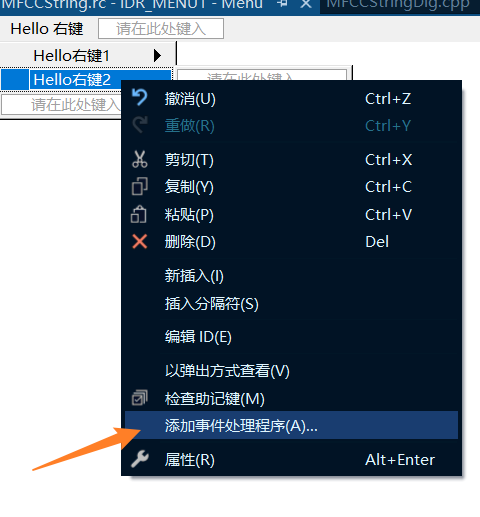

# ListCtrl 高级列表控件
ListCtrl 高级列表控件也是我们平时编程过程中很常用的一个控件，一般涉及到报表展示、记录展示之类的，都需要 ListCtrl 高级列表控件。例如：任务管理器啊，文件列表啊，等等都是 ListCtrl 高级列表控件来实现的。
# 控件的风格样式
LVS_ICON: 为每个 item 显示大图标
LVS_SMALLICON: 为每个 item 显示小图标
LVS_LIST: 显示一列带有小图标的 item
LVS_REPORT: 显示 item 详细资料
直观的理解：Windows 资源管理器，“查看” 标签下的 “大图标，小图标，列表，详细资料”

具体可以通过代码指定控件的风格样式：
先创建一个 CListCtrl 类型的变量 m_ListCtrl
LONG lStyle; | |
lStyle=GetWindowLong(m_ListCtrl.m_hWnd, GWL_STYLE); // 获取当前窗口 style | |
lStyle &= ~LVS_TYPEMASK; // 清除显示方式位 | |
lStyle |= LVS_REPORT; // 设置 style | |
SetWindowLong(m_ListCtrl.m_hWnd, GWL_STYLE, lStyle); // 设置 style |
也可以方便点，从控件的属性中直接修改：
对应控件的 View 属性：Icon、Small Icon、List、Report 四项。
我们主要学习 LVS_REPORT 格式，也就是报表样式。
# 扩展样式设置
DWORD dwStyle = m_ListCtrl.GetExtendedStyle(); // 获取当前扩展样式 | |
dwStyle |= LVS_EX_FULLROWSELECT; // 选中某行使整行高亮（report 风格时） | |
dwStyle |= LVS_EX_GRIDLINES; // 网格线（report 风格时） | |
dwStyle |= LVS_EX_CHECKBOXES; //item 前生成 checkbox 控件 | |
m_ListCtrl.SetExtendedStyle(dwStyle); // 设置扩展风格 |
# 数据插入
// 插入数据 | |
m_ListCtrl.InsertColumn(0, _T("ID"), LVCFMT_LEFT, 150); // 插入列 | |
m_ListCtrl.InsertColumn(1, _T("名称"), LVCFMT_LEFT, 150); | |
// 直接插入 | |
int nRow = m_ListCtrl.InsertItem(0, _T("0")); // 插入行 | |
m_ListCtrl.SetItemText(nRow, 1, _T("C++")); // 设置数据 | |
//LVITEM 结构插入 | |
LVITEM item = { 0 }; | |
item.iItem = 0; // 行号 | |
item.mask = LVIF_TEXT; /*LVIF_IMAGE 支持图标 */; | |
item.cchTextMax = 15; // 插入字符串长度 | |
item.pszText = _T("1"); | |
nRow = m_ListCtrl.InsertItem(&item); | |
m_ListCtrl.SetItemText(nRow, 1, _T("MFC")); |
# 选中和取消选中 Item
int nIndex = 0; | |
// 选中 | |
m_ListCtrl.SetItemState(nIndex,LVIS_SELECTED| | |
LVIS_FOCUSED,LVIS_SELECTED|LVIS_FOCUSED); | |
// 取消选中 | |
m_ListCtrl.SetItemState(nIndex,0,LVIS_SELECTED|LVIS_FOCUSED); |
一直选中 Item: 选中 style 中的 Show selection always , 或者添加扩展样式 LVS_SHOWSELALWAYS
# 得到 CListCtrl 中所有行的 checkbox 的状态
要开启 LVS_EX_CHECKBOXES 样式。
CString str; | |
for(int i=0; i<m_ListCtrl.GetItemCount(); i++) | |
{ | |
if(m_ListCtrl.GetItemState(i, LVIS_SELECTED)== | |
LVIS_SELECTED || m_ListCtrl.GetCheck(i)) | |
{ | |
str.Format(_T("第%d行的checkbox为选中状态"), i); | |
AfxMessageBox(str); | |
} | |
} |
# 得到 CListCtrl 中所有选中行的序号
// 方法一： | |
CString str; | |
for(int i=0; i<m_ListCtrl.GetItemCount(); i++) | |
{ | |
if(m_ListCtrl.GetItemState(i, LVIS_SELECTED) == LVIS_SELECTED ) | |
{ | |
str.Format(_T("选中了第%d行"), i); | |
AfxMessageBox(str); | |
} | |
} | |
// 方法二： | |
POSITION pos=m_ListCtrl.GetFirstSelectedItemPosition(); | |
if(pos==NULL) | |
TRACE0("No items were selected!/n"); | |
else | |
{ | |
while(pos) | |
{ | |
int nItem=m_ListCtrl.GetNextSelectedItem(pos); | |
TRACE1("Item %d was selected!/n", nItem); | |
// 添加其他操作 | |
} | |
} |
# 得到单击的 CListCtrl 的行列号
添加 listctrl 控件的 NM_CLICK 消息相应函数
void CMFCCStringDlg::OnNMClickList1(NMHDR* pNMHDR, LRESULT* pResult) | |
{ | |
LPNMITEMACTIVATE pNMItemActivate = reinterpret_cast<LPNMITEMACTIVATE>(pNMHDR); | |
// TODO: 在此添加控件通知处理程序代码 | |
//// 方法一: | |
//DWORD dwPos = GetMessagePos(); | |
//CPoint point(LOWORD(dwPos), HIWORD(dwPos)); | |
//m_ListCtrl.ScreenToClient(&point); | |
//LVHITTESTINFO lvinfo; | |
//lvinfo.pt = point; | |
//lvinfo.flags = LVHT_ABOVE; | |
//int nItem = m_ListCtrl.SubItemHitTest(&lvinfo); | |
//if (nItem != -1) | |
//{ | |
// CString strtemp; | |
// strtemp.Format (_T ("单击的是第 % d 行第 % d 列"), lvinfo.iItem, lvinfo.iSubItem); | |
// AfxMessageBox(strtemp); | |
//} | |
// 方法二: | |
NM_LISTVIEW* pNMListView = (NM_LISTVIEW*)pNMHDR; | |
if (pNMListView->iItem != -1) | |
{ | |
CString strtemp; | |
strtemp.Format(_T("单击的是第%d行第%d列"), pNMListView->iItem, pNMListView->iSubItem); | |
AfxMessageBox(strtemp); | |
} | |
*pResult = 0; | |
} |
# 右键点击 CListCtrl 的 item 弹出菜单
添加一个菜单资源
对菜单进行编辑：
添加 CListCtrl 控件的 NM_RCLICK 消息相应函数。
void CMFCCStringDlg::OnNMRClickList1(NMHDR* pNMHDR, LRESULT* pResult) | |
{ | |
LPNMITEMACTIVATE pNMItemActivate = reinterpret_cast<LPNMITEMACTIVATE>(pNMHDR); | |
// TODO: 在此添加控件通知处理程序代码 | |
NM_LISTVIEW* pNMListView = (NM_LISTVIEW*)pNMHDR; | |
if (pNMListView->iItem != -1) | |
{ | |
DWORD dwPos = GetMessagePos(); | |
CPoint point(LOWORD(dwPos), HIWORD(dwPos)); | |
CMenu menu; | |
VERIFY(menu.LoadMenu(IDR_MENU1)); | |
CMenu* popup = menu.GetSubMenu(0); | |
ASSERT(popup != NULL); | |
popup->TrackPopupMenu(TPM_LEFTALIGN | TPM_RIGHTBUTTON, | |
point.x, point.y, this); | |
} | |
*pResult = 0; | |
} |
# 添加右键响应函数
为菜单添加消息事件处理函数：

# 结尾
ListControl 还有很多功能，等用到了再学了。
# Reference
https://blog.csdn.net/lsh_2013/article/details/44624239
https://blog.csdn.net/qq_41498261/article/details/108719228